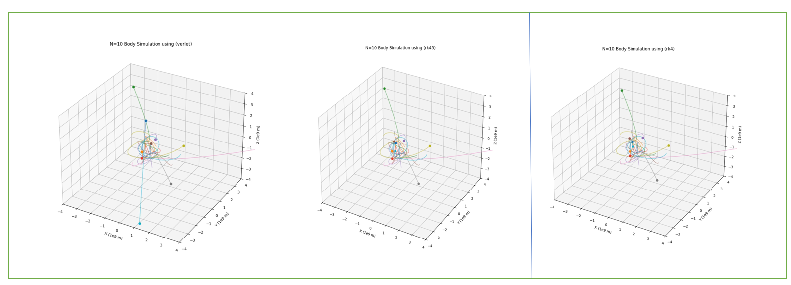
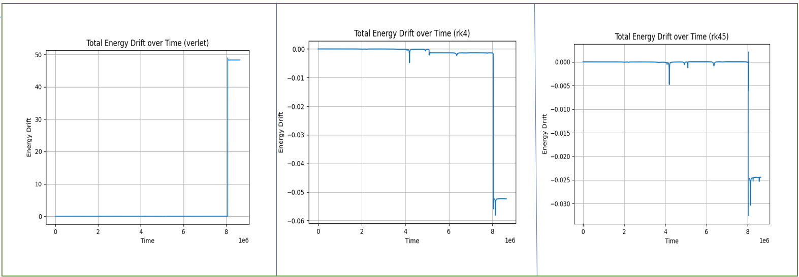
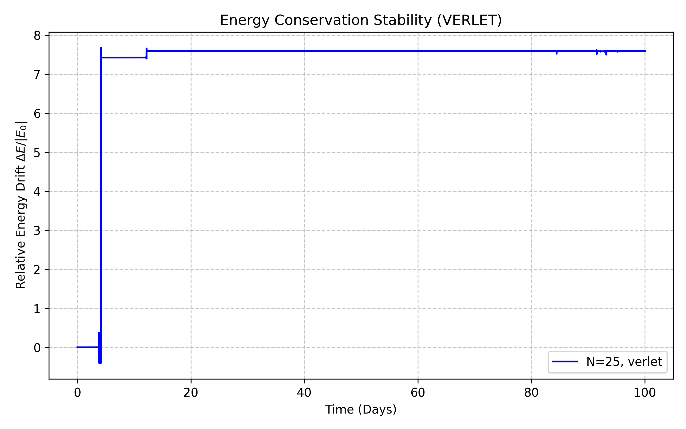

01
It started with gravity.
I wanted to understand what actually happens underneath an N-body simulation rather than treating the solver as a black box. At its core, the problem is deceptively simple: every body feels the gravitational force produced by every other body.
Fij = G(mimj) / rij2
02
First, make two bodies behave.
Before dealing with many interacting particles, I started with the simplest system for which the dynamics are already known: two bodies orbiting their common centre of mass. This became the first test of the numerical machinery.
03
Then time itself becomes numerical.
The equations of motion are continuous, but a computer has to advance the system in discrete time steps. I implemented and compared several numerical approaches: Euler, Leapfrog/Verlet, fourth-order Runge–Kutta and Runge–Kutta–Fehlberg 45.


04
Trajectories are not enough.
A trajectory can look perfectly reasonable while the numerical solution slowly drifts away from the physical system it is supposed to represent. So I tracked the quantities that should remain conserved: total energy and angular momentum.


05 & 06
Two bodies become many, and computation becomes the problem.
The interesting part begins when the system stops having a simple analytical picture. With N bodies, every particle contributes to the gravitational field experienced by every other particle. The computational cost grows approximately as O(N²).

07
Building the machinery myself.
The project was structured so that the physical model, numerical integrators, energy calculations, stability checks and simulation driver could be developed independently.
08 & 09
The simulation is also data.
Each run produces a numerical record of the system rather than just an image on the screen. Direct summation is useful, but the natural next step to handle the scaling bottleneck is adopting distributed computing and hierarchical methods.
10
Scaling up with MPI and Star Clusters.
To push past the limits of a single thread, we introduced MPI (Message Passing Interface) to distribute the computational load across multiple processes. This structural shift allowed us to move beyond simple multi-body toy models and start simulating dense star clusters.
By leveraging parallelization, we successfully scaled the simulation up to 20,000 stars, allowing us to observe macro-scale gravitational dynamics, cluster formations, and deep gravitational interactions that are otherwise impossible to compute quickly on a single node.
11
There is something satisfying about starting from zero.
No simulation engine was hiding the equations. No integrator was hiding the time evolution. No library decided how to scale to thousands of bodies. Start with gravity. Write down the equations. Distribute the workload. Then let the particles move.